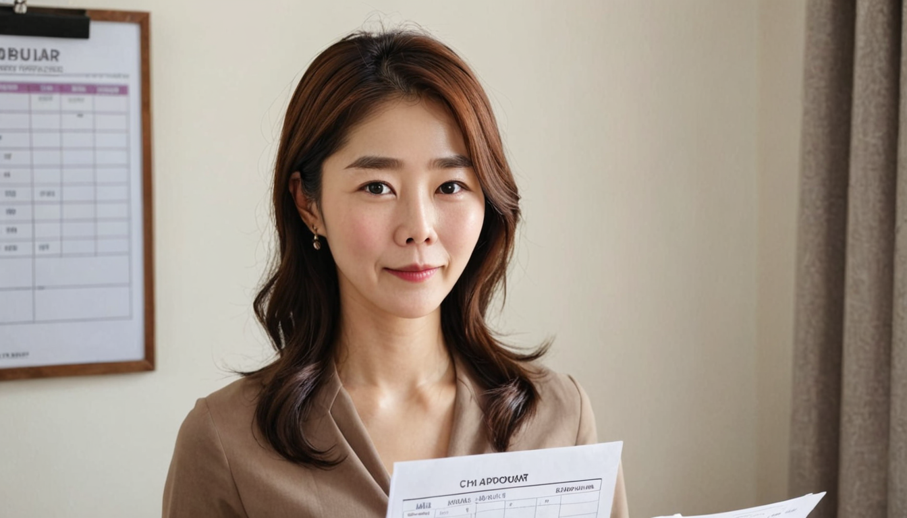

검수 방법: 이미지 전체와 본문 미리보기를 보고, 글마다 승인 / 수정 요청 / 비공개 유지를 알려 주세요. 본문과 URL은 수정하지 않았고 이미지만 교체 후보입니다.
Passport Validity Rules: Why Your Trip Can Be Denied With a Valid Passport
상태: 비공개(초안) · 원 주소 https://atlas-money-2026.blogspot.com/2026/09/passport-validity-rules-why-your-trip.html · 비공개 사유: 미지 얼굴 불일치(ArcFace 0.03~0.39) + 검색의도 유사
중복 검사: 공개 글 1건과 검색의도(travel_documents) 유사 — 재공개 보류·수정 후보
Europe EES Travel Checklist 2026: What to Expect at the Border

Lost Your Passport Abroad? The Order You Do Things In Decides How Long You Wait
상태: 비공개(초안) · 원 주소 https://atlas-money-2026.blogspot.com/2026/09/lost-your-passport-abroad-order-you-do.html · 비공개 사유: 5장 모두 같은 마스터 얼굴 크롭 텍스트 카드 + 검색의도 유사
중복 검사: 공개 글 1건과 검색의도(travel_documents) 유사 — 재공개 보류·수정 후보
Europe EES Travel Checklist 2026: What to Expect at the Border
Credit Card Travel Insurance: Is It Enough for an International Trip?
상태: 비공개(초안) · 원 주소 https://atlas-money-2026.blogspot.com/2026/09/credit-card-travel-insurance-is-it.html · 비공개 사유: 대표 이미지 마스터 합성 + 텍스트 카드 4장
중복 검사: 공개 글 9건과 검색의도(travel_insurance) 유사 — 재공개 보류·수정 후보
Travel Insurance for Baggage Delay and Lost Luggage: What to Check / Annual Multi-Trip Travel Insurance: Is It Worth It? / When to Buy Travel Insurance for Hurricane Season / What Trip Cancellation Insurance Actually Covers (and What It Doesn't) / Student Travel Medical Insurance for Studying Abroad: A Practical Guide / Travel Medical Insurance for Seniors Over 65: A Pre-Trip Checklist / Emergency Medical Evacuation Insurance: Remote Trips and Cruises / Travel Insurance Pre-Existing Condition Waiver: How to Qualify / How to Compare Travel Insurance for an International Trip
Nepal Floods 2026: How to Help Now — and How Families Can Prepare for Flash Floods
상태: 비공개(초안) · 원 주소 https://atlas-money-2026.blogspot.com/2026/09/nepal-floods-2026-how-to-help-now-and.html · 비공개 사유: 대표 이미지 마스터 합성(나머지 정보 카드 4장은 유지)
중복 검사: 중복 없음
Adventure Travel Insurance: Are Hiking, Diving, and Skiing Covered?
상태: 비공개(초안) · 원 주소 https://atlas-money-2026.blogspot.com/2026/08/adventure-travel-insurance-are-hiking.html · 비공개 사유: 대표 이미지 마스터 합성(나머지 실사진 4장은 유지)
중복 검사: 공개 글 9건과 검색의도(travel_insurance) 유사 — 재공개 보류·수정 후보
Travel Insurance for Baggage Delay and Lost Luggage: What to Check / Annual Multi-Trip Travel Insurance: Is It Worth It? / When to Buy Travel Insurance for Hurricane Season / What Trip Cancellation Insurance Actually Covers (and What It Doesn't) / Student Travel Medical Insurance for Studying Abroad: A Practical Guide / Travel Medical Insurance for Seniors Over 65: A Pre-Trip Checklist / Emergency Medical Evacuation Insurance: Remote Trips and Cruises / Travel Insurance Pre-Existing Condition Waiver: How to Qualify / How to Compare Travel Insurance for an International Trip
국내(네이버) — 수동 비공개 필요
네이버 공개 설정을 바꾸는 기존 기능이 없어 자동 처리하지 않았습니다. 네이버 글관리에서 직접 비공개로 바꿔 주세요.
| 글 | 문제 |
|---|---|
| 추석 선물 고르기 | 3장 모두 같은 수호 얼굴 크롭 텍스트 카드 |
| 글라스락 클래식 화이트 10종 | 수호 텍스트 카드 2장 같은 얼굴·구도 (실사진 4장은 정상) |
| 필립스 3000 전기주전자 | 수호 얼굴 크롭 텍스트 카드 1장 |